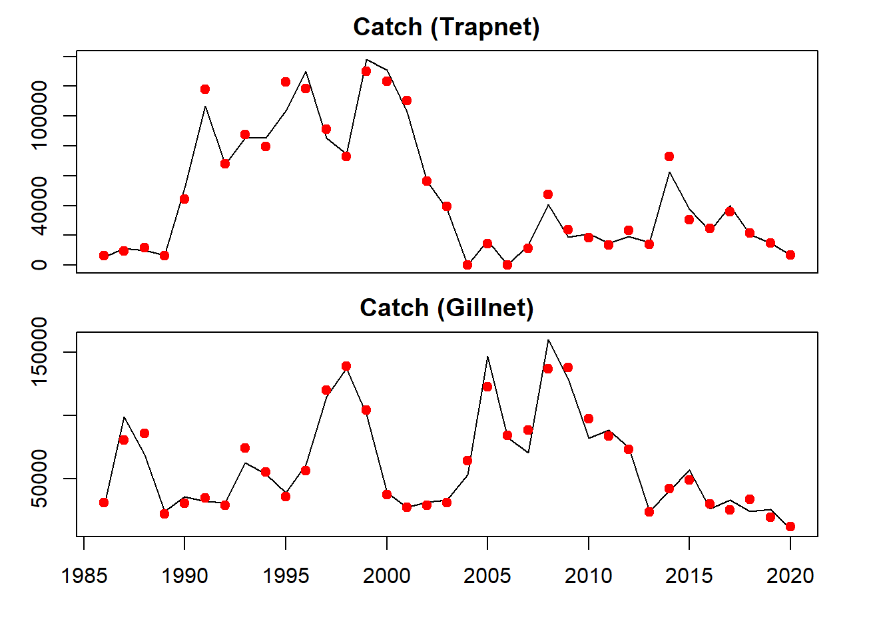
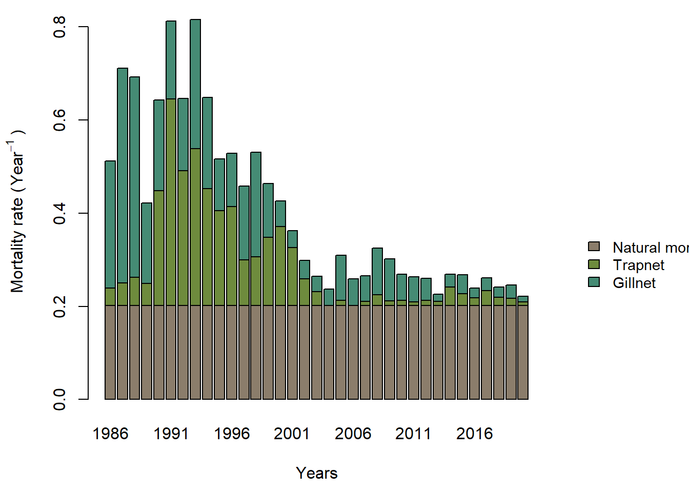
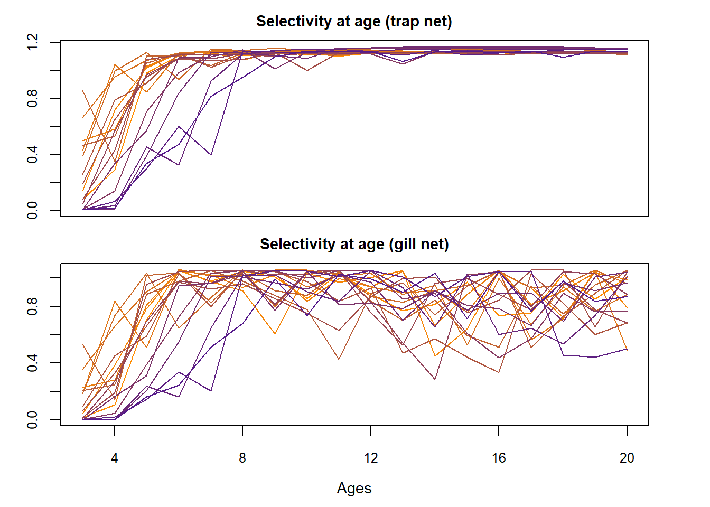
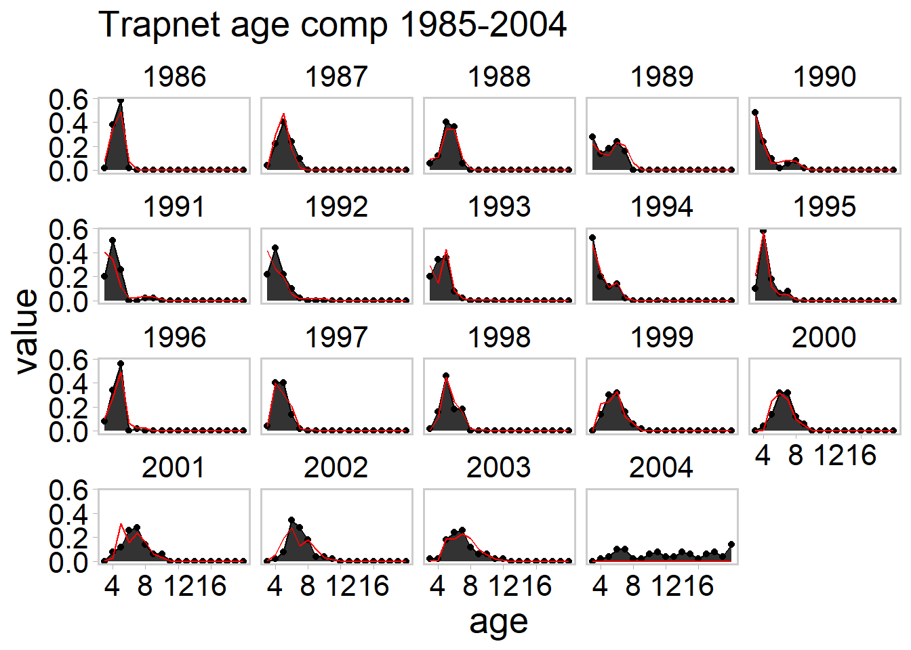
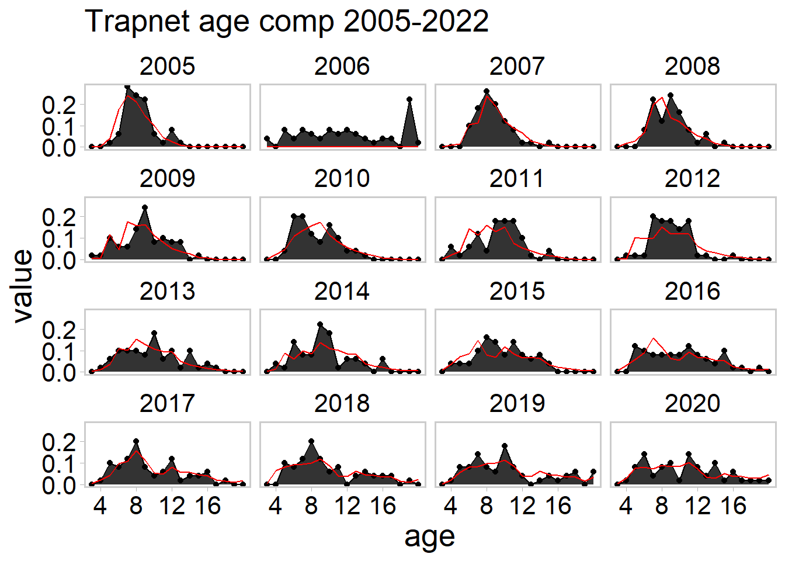
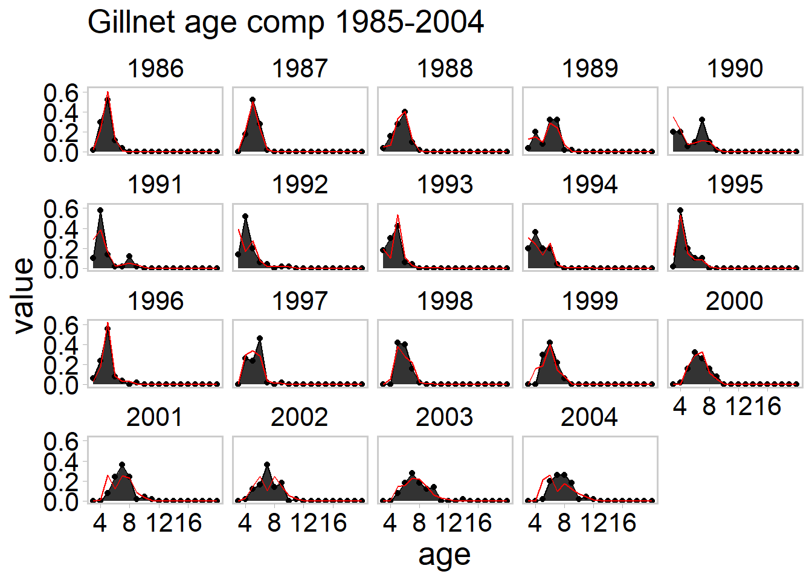
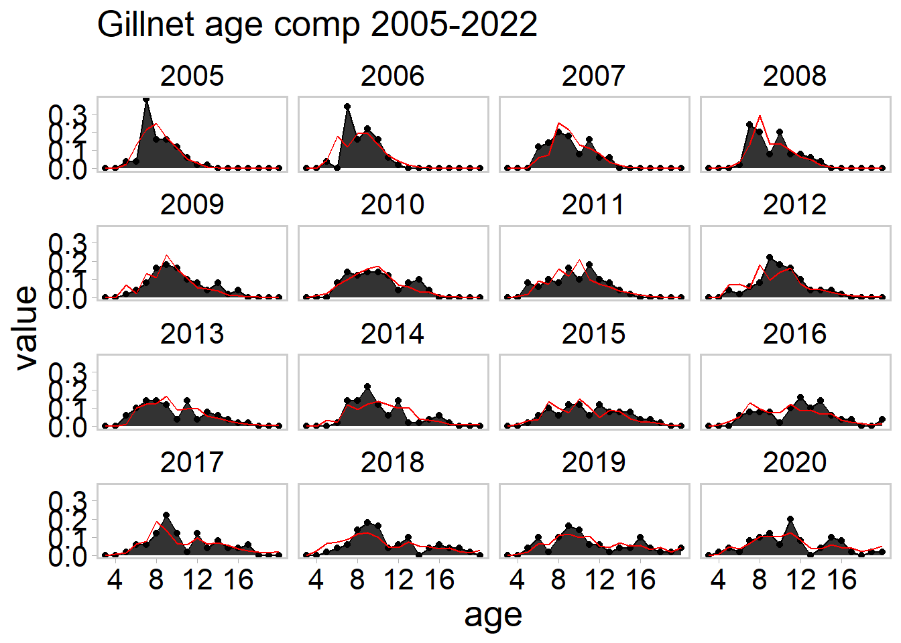

library(RTMB)
# for plotting
# devtools::install_github("QFCatMSU/gg-qfc")
library(ggqfc)
library(tidyverse)
library(ggplot2)
library(here) # used to source R scripts
# otherwise, can just use ("R/script_name") is using R projects
# R scripts for running GLAM (see )
source(here("R", "glam.R"))
source(here("R", "run_glam.R"))
source(here("R", "check_convergence.R"))
source(here("R", "rename_data.R"))
source(here("R", "prep_glam_data.R"))
source(here("R", "prep_glam_pars.R"))
source(here("R", "run_retro.R"))
source(here("R", "run_peel.R"))RTMB and GLAM walkthrough
Load packages and source R scripts
Since this is not a R package, each necessary R script will need to be sourced.
Read in data
If your data is within a Excel sheet, run prep_glam_data.r. This will convert the data from the Excel sheet to a format that can be for RTMB. It also converts the names from ADMB to RTMB.
data_file_name = "MI4_LWF_DAT_10_23_2023"
data = prep_glam_data(model_name = "MI4",
data_file_name = data_file_name,
sel_type_trap = "logistic",
gill_fleet = TRUE,
rec_fleet = FALSE,
pauly_M = TRUE,
recruit_model = "AR1")(In progress) from ADMB .dat file
For this demostration, we’ll use the simulated data set (WF_sim_data.Rdata).
load(here("data", "WF_sim_data.Rdata"))Define parameters
Use prep_glam_pars.r to set up initial estimates for parameters. If a parameter is not being used in your model, put “NULL” in the argument.
pars = prep_glam_pars(log_sig = -2,
log_M = data$log_M_init,
log_q_trap = -5,
log_q_gill = -5,
log_q_rec = NULL,
log_q_trap_dev = numeric(data$n_years - 1),
log_q_gill_dev = numeric(data$n_years - 1),
log_q_rec_dev = NULL,
log_sel_trap_p1 = 6.06,
log_sel_trap_p2 = -2.9,
log_sel_gill_p1 = -2.1,
log_sel_gill_p2 = 1.82,
log_sel_rec_p1 = NULL,
log_sel_rec_p2 = NULL,
log_sel_trap_dev = numeric(data$n_years - 1),
log_sel_gill_dev = numeric(data$n_years - 1),
log_sel_rec_dev = NULL,
log_pop_init = rep(9, 4),
log_recr_init = 12,
log_recr_avg = 12,
log_recr_dev = numeric(data$n_years - 1),
acor = 0.5
)Set up model run
Notice that the data and pars lists are not in the argument of run_glam.r. This is how it is set up for RTMB. RTMB will pick up the list names based on what is defined within the RTMB function. You cannot use other names for the data list and parameters list. (data and pars).
You use run_glam.r to conduct a model run. nlminb is being used to run RTMB. You can define the control list, which can help with improving model runs (e.g., increasing number of iterations; description is here).
[hessian]
You can also run Newton steps, which helps with improving the gradient. Warning: use this only if the maximum gradient is close enough to the tolerance/threshold of convergence (max gradient < 1e-3). This will not help if the model is not converged or the maximum gradient is too high (max gradient > 0.1). Typically, three Newton steps (n_newton = 3) are recommended since they do not improve the gradients beyond that.
[fixed, random]
res = run_glam(nlminb_control = list(
eval.max = 1e4,
iter.max = 1e4
),
hessian_run = FALSE,
run_newton = TRUE,
n_newton = 3,
fixed_names = NULL,
rand_names = NULL)Model diagnostics consistent with convergence.[1] "Standard errors for some parameter estimates are high, consider checking this!"Messages
Model convergence: If the model did not converge, a warning will print: “Model did not converge!”. If the model has good gradients, the hessian is invertible, and all the parameters are identifiable, then this will appear: “Model diagnostics consistent with convergence.”
High gradients: If the maximum gradient is too high (> 1e-3), a warning will print: “Gradients are high, please improve optimization!”. If there are any parameters that do not meet this threshold, then a list of “bad” parameters will be given in
res$check$whichbad_param.Hessian: If there are any NaNs in the Hessian matrix, then the hessian is not invertible [?] and the model has not converged. It will print: “The hessian was not invertible”.
Eigen: Parameters are considered identifiable… [?] If paramters are not identifiable, the hessian (and standard error) cannot be estimated for that parameter and the model has failed to converge. Sometimes, fixing the non-identifiable parameter improves the model run. Warning: This check will only run if the gradients met the threshold. It will not run if there are bad gradients.
Standard error check: If the standard errors for the parameter estimates are high, a warning will print: “Standard errors for some parameter estimates are high, consider checking this!.” This does not stop the model run, but considerations should be made to check the parameter estimates and rerun the model if the standard errors are unreasonable.
# look if the model is converged and well estimated
check = res$check
check$convergence # 1 - non convergence; 0 - convergence[1] 0check$message # type of convergence (relative is fine as long as the other checks below are good)[1] "both X-convergence and relative convergence (5)"check$max_gradient # maximum gradient[1] 4.203952e-09check$whichbad_params # prints out which parameters do not meet threshold (1e-3). This should be NULL if there are no issuesNULLcheck$whichbad_eigen # prints out which parameters have bad eigen values. This should be NULL if there are no issuesNULLcheck$sdcheck # prints out which parameters have high standard errors Estimate Std. Error
log_q_trap_dev 0.0041760824 0.14007472
log_q_trap_dev 0.0255956564 0.14286093
log_q_trap_dev -0.0638237008 0.13840200
log_q_trap_dev -0.0279886206 0.13930335
log_q_trap_dev -0.0407167409 0.13750907
log_q_trap_dev 0.0639471647 0.13604435
log_q_trap_dev 0.0677741161 0.14223954
log_q_gill_dev -0.0293278735 0.14057240
log_sel_trap_dev 0.0053422601 0.01170065
log_sel_trap_dev 0.0001868108 0.01173908
log_sel_trap_dev -0.0001321034 0.01166746
log_sel_trap_dev 0.0056652042 0.01148095
log_sel_trap_dev 0.0031547256 0.01143585
log_sel_trap_dev -0.0029734947 0.01121752
log_sel_trap_dev 0.0006690528 0.01104473
log_sel_trap_dev 0.0011234768 0.01090512
log_sel_trap_dev 0.0010263762 0.01094957
log_sel_trap_dev -0.0005736797 0.01103460
log_sel_trap_dev 0.0030879979 0.01110054
log_sel_trap_dev 0.0029875584 0.01118166
log_sel_trap_dev -0.0054922223 0.01117585
log_sel_trap_dev -0.0026360439 0.01100729
log_sel_trap_dev -0.0028433863 0.01111317
log_sel_trap_dev 0.0045828442 0.01149218
log_sel_trap_dev 0.0045828442 0.01149218
log_sel_trap_dev -0.0028890112 0.01129528
log_sel_trap_dev -0.0047291422 0.01141617
log_sel_trap_dev -0.0015026640 0.01154009
log_sel_trap_dev 0.0004395665 0.01154573
log_sel_trap_dev -0.0029860263 0.01164739
log_sel_trap_dev -0.0027566602 0.01177828
log_sel_trap_dev 0.0003561170 0.01203948
log_sel_trap_dev -0.0048162135 0.01191201
log_sel_trap_dev -0.0015658319 0.01215042
log_sel_gill_dev -0.0041582724 0.01226252
log_sel_gill_dev -0.0002705291 0.01225928
log_sel_gill_dev -0.0025338327 0.01223312
log_sel_gill_dev 0.0005423110 0.01221404
log_sel_gill_dev 0.0058886196 0.01222134
log_sel_gill_dev 0.0020670444 0.01211324
log_sel_gill_dev -0.0036680837 0.01207761
log_sel_gill_dev -0.0024575112 0.01202310
log_sel_gill_dev 0.0031302011 0.01203973
log_sel_gill_dev 0.0006097779 0.01204205
log_sel_gill_dev 0.0024228431 0.01204441
log_sel_gill_dev 0.0039619165 0.01205126
log_sel_gill_dev 0.0051610204 0.01203028
log_sel_gill_dev 0.0056649019 0.01201003
log_sel_gill_dev 0.0030549249 0.01201174
log_sel_gill_dev 0.0056853754 0.01203580
log_sel_gill_dev 0.0033185909 0.01205068
log_sel_gill_dev 0.0044495512 0.01204866
log_sel_gill_dev 0.0040917884 0.01204986
log_sel_gill_dev -0.0015399645 0.01206367
log_sel_gill_dev -0.0002888644 0.01208172
log_sel_gill_dev -0.0004544363 0.01210679
log_sel_gill_dev -0.0017694347 0.01214694
log_sel_gill_dev -0.0031269828 0.01219165
log_sel_gill_dev -0.0031392455 0.01221682
log_sel_gill_dev -0.0051214597 0.01225406
log_sel_gill_dev -0.0044302934 0.01228110
log_sel_gill_dev -0.0037082361 0.01233198
log_sel_gill_dev -0.0024263096 0.01235653
log_sel_gill_dev -0.0010351048 0.01239025
log_sel_gill_dev -0.0001106984 0.01238792
log_sel_gill_dev 0.0001907990 0.01242638
log_recr_dev 0.1268356207 0.29760292
log_recr_dev -0.0016765868 0.24788771
log_recr_dev 0.0065919349 0.26995647
log_recr_dev 0.0481641466 0.32175168
log_recr_dev 0.1195534824 0.29541268
log_recr_dev 0.0887215396 0.27923483
log_recr_dev -0.0356450823 0.24947302
log_recr_dev -0.2250084971 0.69170624
log_recr_dev 0.0000000000 1.24586190Now save results here:
report = res$report$out # only export model results (e.g., catch, biomass, selectivity, etc.)Plot results
[In progress]






